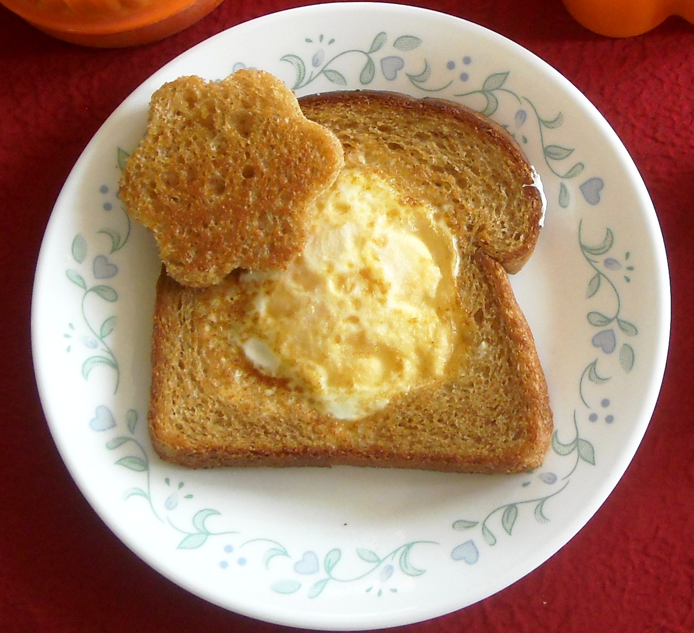

Peek-a-boo Egg Sandwich

Description
A peek-a-boo egg sandwich is a simple dish consisting of only three ingredients:
a slice of bread, an egg, and butter
Ingredients
- Slice of bread, reader's choice
- Medium-large sized egg
- 1tbsp of butter
Steps
- Place medium fry pan on high heat
- Add butter until pan is covered
- Using a small diameter glass, about the width of an aluminum can,
cut out the center of the slice of bread and place the center piece to the side
- Place the bread in the pan, and immediately crack the egg into the center hole
- Fry bread and egg until desired level of done-ness, flipping and cooking evenly
- On the side of the pan, add the sliced center piece and cook until golden brown
- Once completely cooked, remove peek-a-boo egg sandwich, and place cooked center piece
on top to garnish.
- Enjoy!